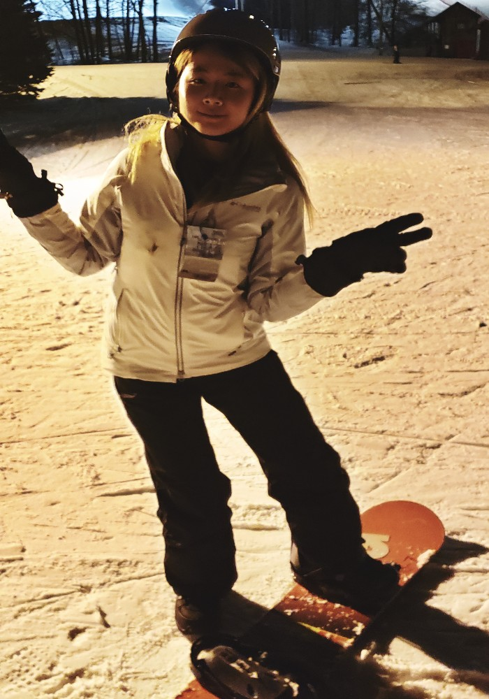

Baking
Chocolate Chip Cookies
Chocolate cookies are the best to make for a sweet tooth! It's easy to make and it also tastes good!
Watermelon Cookies
Alongside with chocolate chip cookies, I've made sugar cookies, but shaped like watermelons by adding a few food coloring. It looks very cute!
Chinese Dessert
As an Asian American, I am learning some of my chinese culture's dessert. This one is called "but jai go", translated to little sugar cup desserts. The ingredients are just flour, sugar, and water! (I've used brown sugar to get that color, but you can use white sugar). A very simple and delicious dessert!
Cooking
Chicken with Vegetables
Besides baking, I tried my best to learn to cook especially since I'm a college student. This is a chicken drumstick with broccoli and cauliflower. I just can't decide which Vegetables to add, so I added both!
Dalgona Coffee
Ever since quarantine started, Dalgona Coffee has hit popularity. I had to try it. I would consider this as half cooking! It does take some work, but the results are amazing!
Chicken Katsu

This is a very popular Japanese dish called Chicken Katsu, or also known as Chicken Cutlet. It's made by flattening the chicken and dipping it in flour, egg, and panko crumbs. Then fry until golden brown. Very delicious!
Planting
Iris
I've started getting plants for my room and for my outside small front yard. Plants help bring life into the home and this first plant is a type of succulent. I named it Iris :)
Oliver
Alongside with Iris, this is Oliver. Oliver is a type of exotic angel plant!
Snowboarding
First time snowboarding!
Since I attend university upstate, a popular sport is snowboarding. Rochester can get extremely cold and what's better to do than snowboard! This is a picture of me during my first time snowboarding. The very next day was a nightmare - full of bruises, but it was fun!